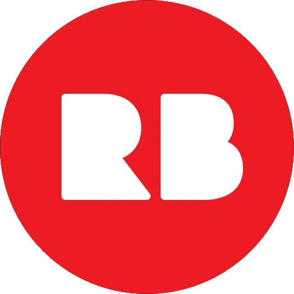

What Else do I do?
I'm on MANY different platforms actually for the various different things I do! While my presence is very strong on Twitter, I'm also on other places, most notably discord! I run a small server for people to talk about old computer stuff and just kinda hang out. More information about the server as well as the other platforms I operate on are listed below.
Click the logos to go to the page!

Redbubble! Redbubble is a platform for ordering custom designs on things like T-shirts, coffee mugs, stickers, and so much more! I do a little bit of work within the site from time to time, and I think some of the designs are quite good! I've ordered a few myself, and I can attest to the pretty good quality all around from them! They're not premium quality, but they also don't have a premium price. Any item ordered gives me a small percentage of the sale price as well, so anything you buy is supporting me!

Youtube! I run a page there called "WysiWyg's Computer Repository", or WCR for short. I do relatively short videos, mainly focussed on exploring computer hardware, but I've also got other videos, like music edits, and recently, Blender animation! I've been quite busy for the past while, so videos have been pretty few and far between, but I do plan on returning to it at some point in the future!

Thingiverse! Thingiverse is a very useful tool for me to have at my disposal when talking about the hobby. It allows me to download and print parts for these old machines that may be broken or missing. I also 3d model my own parts and upload them there for anyone to download and use for their computer. It can be a real life saver for some of the pieces, and a lot of the restorations I've done simply wouldn't be possible without it.

Twitter! Twitter is by far the place where I am the most active. I make daily posts about projects I am working on, issues I might be having with said projects, as well as general behind-the-scenes looks at what I do on a daily basis to bring all of you the highest quality content possible across these various platforms. If you didn't come to this site from Twitter somehow, check it out! Twitter is also one of the best places to contact me if you need!

Discord! Discord is suuuuuuuper cool for me because I run a server there! As mentioned above, we talk about old pc stuff, software, hardware, you name it we talk about it. It's also a nice place to just talk to people and chill out. We've got some AWESOME people in there too for troubleshooting, myself included! If you want to be a part of the community, click here to join!